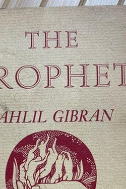

Library › Self-Improvement
The Prophet — Summary & Key Lessons

Gibran's immortal essays on love, work, joy and sorrow — the poetry of a life fully lived.
📖 OPEN THE FULL INTERACTIVE BREAKDOWN →🌐 Read it in Hindi, Hinglish, Gujarati, Tamil & 22 more languages — free, with audio.
💡 The Big Idea
In a small book, the prophet Almustafa, about to leave the city of Orphalese, answers its people on the essentials: love, marriage, children, giving, work, joy and sorrow, freedom, friendship, time, death. Gibran's voice is universal — no doctrine, only deep human experience rendered in aphorisms. Its famous paradoxes: work is love made visible; joy and sorrow are inseparable; your children are not your children; and death is only the freedom to stand in the sun of your own life.
🧠 The 8 Key Lessons
Lesson 1: Love Without Demands
On Love
Gibran's first essay: love does not command but fulfils; when you love, you should not say 'I have found the way' but 'I have walked in the way'. The teaching's edge: love with the open hand — not possession. Keep love's cup full, but do not drink from it dry; love gives of itself, not of itself only.
📖 Example: The parent who asks what the child needs — not what the child owes — has understood the essay. Read the full example →
⚡ Do this: One act of love today with the receipt torn up: no credit, no expectation of return.
Lesson 2: Children Are Not Yours
On Children
Gibran's most quoted lines: your children are not your children; they come through you but not from you; you may give them your love but not your thoughts, your house but not their souls. The teaching is an arrow aimed at the deepest parental illusion — ownership. The parent's role is the bow; the child is the arrow that must leave.
📖 Example: The parent who says 'my child will be a doctor' has confused a loan with a possession. Read the full example →
⚡ Do this: In one decision involving a child or a mentee, surrender the outcome to their own longing.
Lesson 3: Work Is Love Made Visible
On Work
The prophet's answer to 'speak to us of work': work is not a means to life but life itself — love made visible. Work that is done with care, even the smallest, is worship; work done only for wages builds a house you never live in. The famous line about bread: if you bake bread with indifference, you bake a bitter bread that feeds only half a man's hunger.
📖 Example: The barista who makes coffee as craft serves more than caffeine; the one who merely fills cups leaves the soul unfed. Read the full example →
⚡ Do this: Choose one task this week and do it as if it were your signature — let the work speak your love.
Lesson 4: Joy and Sorrow Share a Cup
On Joy and Sorrow
Gibran's paradox: the same cup that holds your joy holds your sorrow, and the deeper sorrow carves, the more joy the vessel can contain. You cannot choose one and refuse the other — they arrive together. The teaching is not masochism; it is acceptance: feel fully, because the same openness that hurts is what enjoys.
📖 Example: The parent who fully grieved a loss can also fully celebrate a win — the depth of the cup is shared. Read the full example →
⚡ Do this: Let one joy fully in today — without checking it against the disappointments. The cup is yours.
Lesson 5: Death Is Part of Life
On Death
The closing essay: you would know the secret of death only by seeking it in the heart of life. The oak does not fear the felling. Death is not the opposite of life; it is the opening of the door that leads to more, and you must stand at the threshold as you would stand before a feast. The advice for the living: be like the waves — meet the ocean as a friend.
📖 Example: The dying who speak of life with the most love are those who never postponed it — the everyday practice of the essay. Read the full example →
⚡ Do this: Tonight, review the day as a life: what was lived, what was postponed — and close one postponement tomorrow.
Lesson 6: On Giving: The Open Hand
On Giving
The prophet's most demanding essay: the truly generous give of themselves, not merely of their possessions — the cautious giver who measures the gift loses the joy, and the open hand gives and remains full. You give but little when you give of your possessions; you give truly when you give of yourself.
📖 Example: The rich man who donates from surplus is still poor in spirit; the poor man who gives his time, attention and skill is the wealthy one. Read the full example →
⚡ Do this: Give one thing this week that costs you — an hour, a skill, full attention — to someone who cannot repay you.
Lesson 7: On Freedom: The Yoke of Your Choosing
On Freedom
Gibran's essay on freedom ends with a paradox: you are not free when you break your yoke, but when you wear it knowing it is yours — the free person has chosen the work, the love and the law they serve. Freedom is not the absence of bonds; it is the choosing of them.
📖 Example: The servant who serves with love is freer than the master who commands in fear — the yoke is the same; the choice is not. Read the full example →
⚡ Do this: Take one duty you currently resent and re-choose it consciously tonight: 'I choose this because…' — then see whether it is still a yoke.
Lesson 8: On Friendship: No Purpose but the Deepening
On Friendship
Gibran's friendship essay warns against using friends: 'let there be no purpose in friendship save the deepening of the spirit.' The true friend is a field of rest and a mirror that shows you your own face — as much for your secrets as for your sharing. Friendship is the one place where being is enough.
📖 Example: The friend you call only when you need something has become a transaction; the friend you call with nothing to say has become a mirror. Read the full example →
⚡ Do this: Spend one hour with your oldest friend this month with no agenda — no favour, no problem, presence only.
✅ 5-Step Action Plan
- Give once with no expectation of return.
- In one child or mentee decision, surrender control.
- Do one task as signature work this week.
- Let one joy in fully, uncancelled by the past.
- Close one postponement tomorrow.
⚠️ When This Doesn't Work
The Prophet is poetry, not a system; its effortless wisdom can be quoted into passivity. Gibran's metaphors are beautiful and sometimes paradoxically escapist — pair them with action, or they remain decoration.
💀 The Graveyard Proves It
🎸 Decca Records — 'Guitar Groups Are on the Way Out'. Burn: The Beatles Read the full case study →
💬 Best Quotes from The Prophet
- “Work is love made visible.”
- “Your children are not your children; they are the sons and daughters of Life's longing for itself.”
- “The deeper that sorrow carves into your being, the more joy you can contain.”
Interactive version: mark lessons as read, listen in your language, share quote cards.